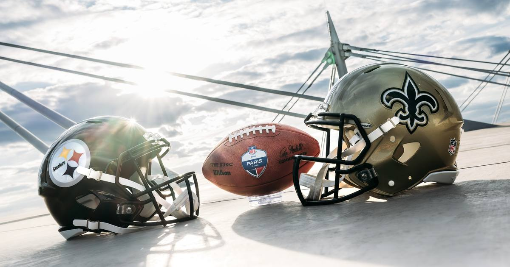

NFL Sunday: Steelers Lead in Paris, Nacua Expected to Play, and the Afternoon Window to Watch
The NFL's first game in France is underway, the injury report reshaped the afternoon, and Jonathan Taylor's name is back in trade chatter. Here's Sunday in one place.

Paris is underway
The NFL's first-ever regular-season game in France kicked off at 9:30 AM ET at Stade de France, and the early going belongs to Pittsburgh: Steelers 3, Saints 0, late in the first quarter (live, ESPN scoreboard). Aaron Rodgers and the Steelers are the road favourites in a game that started the day before most American fans had coffee — the Saints, the designated home team, are playing through quarterback Tyler Shough's broken bones in his non-throwing left hand.
The injury updates that matter
Puka Nacua is expected to play. The Rams were "confident" Sunday morning that Nacua (calf) suits up against the Raiders at 4:25 PM ET, per NFL Network's Ian Rapoport, with a warmup test as the final hurdle. The morning slip skipped Rams-Raiders on Nacua's questionable tag — this update is the reason that game is worth watching, not betting, until warmups confirm it.
Breece Hall is unlikely to go. The Jets' star running back, out since Week 3 with a quad strain, is "unlikely to play" against the winless Dolphins at 1:00 PM ET, per Rapoport. Braelon Allen has carried the backfield in his absence (194 yards in relief) and gets another start if Hall sits.
The Colts are decimated in Minnesota. Indianapolis is without CB Sauce Gardner (calf), TE Tyler Warren (groin), WR Anthony Gould (concussion) and LB CJ Allen (ankle) for the 1:00 PM ET kickoff against the 5-0 Vikings — the health gap behind the Vikings -6.5 line in today's fixed slip.
Houston's defence is banged up too. The Texans are missing RB David Montgomery (groin), OT Blake Fisher (thumb), S Reed Blankenship (concussion/hand) and S Jalen Pitre (shoulder) against the Giants at 1:00 PM ET, with WR Tank Dell (knee) questionable.
Trade chatter: Jonathan Taylor's name is out there
Rapoport also reports the Packers, Vikings, Seahawks and Broncos are "among the teams interested" in trading for Colts running back Jonathan Taylor, with the Colts viewing Taylor as a franchise pillar even as their season slides to 2-4. Taylor turns 28 at season's end, and Indianapolis is without its 2027 first-round pick — the kind of context that makes a contender's phone call worth taking. Nothing is done; it's a report, not a trade. But note the timing: two of the interested teams (Minnesota, Green Bay) play each other in spirit today — the Vikings host Taylor's Colts at 1:00 PM ET, and the Packers visit Detroit at 4:25 PM ET.
The afternoon window
• 4:05 PM ET, CBS: Broncos (4-2) at Cardinals (2-4). Denver laying 4.5 on the road.
• 4:25 PM ET, FOX: Packers (4-2) at Lions (3-2). The NFC North showdown, with the week's highest total (54.5) — the shootout game of the day.
• 4:25 PM ET, FOX: Rams (2-4) at Raiders (3-3). Watch Nacua's warmup, not the line.
• 8:20 PM ET, NBC: Chiefs (5-0) at Seahawks (3-3). Sunday Night Football, with Kansas City's Rashee Rice ruled out.
Full picks for the afternoon are in today's Sunday Afternoon Card, and the fixed morning slip is here.
Sources: ESPN scoreboard (live Paris score), NFL Network via NBC Sports (Nacua, Hall, Taylor reports), Colts Wire and Vikings Wire (Colts/Vikings injury designations), Sharp Football Analysis and Vegas Insider (lines).
Gear up: Fanatics